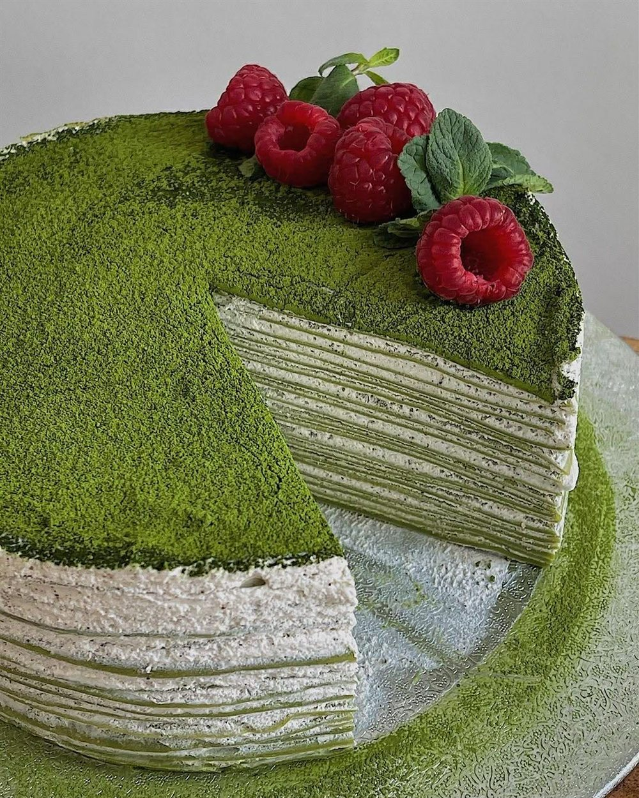

What is matcha?
Tencha leaves are shaded before harvest, then ground slowly between granite stones. The result is a powder fine enough to suspend in water.
Ceremonial matcha, stone-milled in small batches
Bright, vegetal, and quietly restorative. Every cup is sifted, whisked, and poured when you order it.

01 / About
Matcha is shade-grown tea, stone-milled into a fine powder. You drink the whole leaf, which is why it tastes deeper and feels calmer than a steeped cup.
Tencha leaves are shaded before harvest, then ground slowly between granite stones. The result is a powder fine enough to suspend in water.
Matcha carries caffeine and L-theanine together. The pairing gives a steadier lift than coffee, without the sharp drop that follows.
Whisk it with hot water for tea, pour it over milk and ice, or fold it into desserts and smoothies. There is no wrong way to slow down.
03 / The ritual
Making matcha is less about speed and more about attention. Three small steps, a few quiet minutes, a better cup.
Press the powder through a fine sieve. Clumps sink to the bottom; sifted matcha suspends evenly.
Add hot water and whisk in a W motion with a chasen until a soft, persistent foam forms.
Drink it warm as tea, or pour it over milk and ice. Either way, let the first sip be slow.
04 / Visit
Come for a cup, stay for a slice. We are here for the long conversations and the quiet ones.